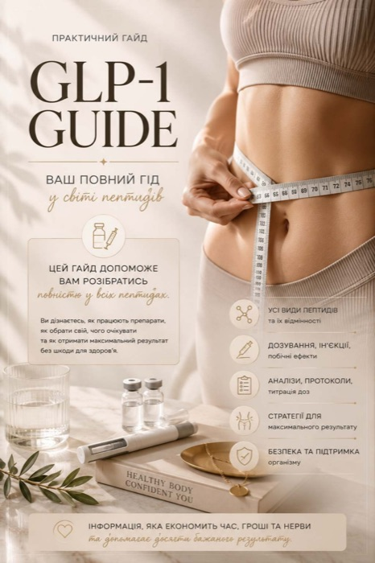
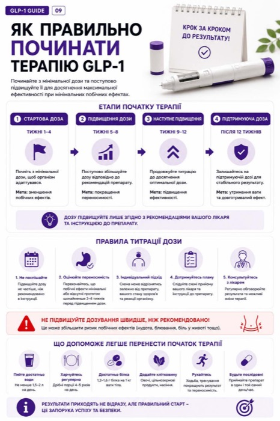
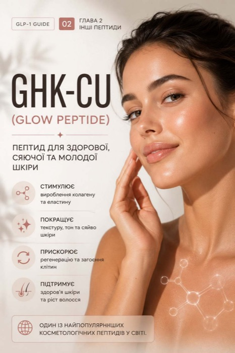
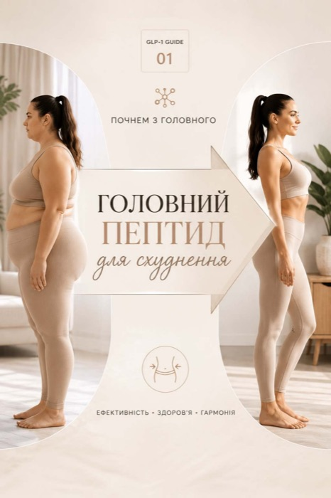
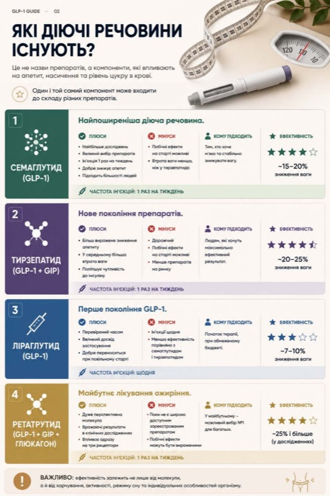
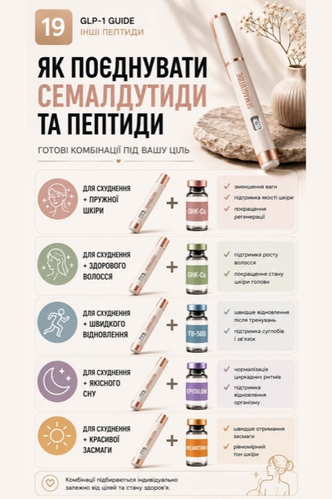

Немає часу й сил на зал? Багато чула про уколи для схуднення, але страшно й незрозуміло, з чого почати? Цей гайд — для тебе. Простою мовою, від нуля.

Ти не одна. Через це проходять тисячі жінок — і справа зовсім не у «слабкій силі волі».
Пробувала все — дієти, підрахунок калорій, марафони схуднення. Вага йде, а потім повертається ще й із «друзями».
На зал і виснажливі тренування просто немає ні часу, ні сил. Життя, робота, дім — і так по колу.
Чула про уколи для схуднення — але страшно, незрозуміло і здається «це не для мене».
В інтернеті — тисячі суперечливих порад, страшилок і відгуків. Голова йде обертом, а ясності немає.
Проблема не у тобі. Проблема — у тому, що ніхто не пояснив просто. Зараз пояснимо.
Якщо коротко — це сучасні препарати, які зменшують апетит. З ними ти їси менше й наїдаєшся швидше, без постійного відчуття голоду та зривів. Саме про них говорить весь світ.
Ozempic, Wegovy, Mounjaro, Saxenda — це все звідси. Різні назви, але суть одна: допомогти контролювати апетит і вагу.
Ти перестаєш думати про їжу цілий день і легше зупиняєшся вчасно.
Вага йде поступово й без вічного почуття, що ти на голодуванні.
Не сила волі, а сучасний підхід. Тому це працює там, де дієти зривались.
36 сторінок простою мовою. Без складних термінів і «води».
Розберешся, які бувають препарати й чим вони відрізняються — простими словами.
Найвідоміші препарати поруч — щоб зрозуміти, на що взагалі дивитися.
Що варто перевірити заздалегідь, щоб не нашкодити собі.
Чому починають з малого і як тіло звикає без зайвих побічок.
Прості кроки, від яких залежить, чи буде результат стійким.
Для шкіри, волосся, енергії та відновлення — коротко й по суті.
Головна помилка новачків — поспішати. У гайді розписано просту й безпечну схему старту, крок за кроком.


Коротко про те, що ще допомагає — для шкіри, волосся, сну та енергії.
Повний доступ до всіх 36 сторінок — одразу після оплати.



Нарешті розумієш, що це таке і як працює.
Знаєш, які аналізи здати й чого уникати.
Розумієш кроки замість здогадок і страху.
Дієш спокійно, без хаосу в голові.
Так, гайд написаний саме для новачків — простою мовою, з нуля, без складних медичних термінів. Якщо ти чула тільки слово «Ozempic» — цього достатньо, щоб почати.
Ні. Гайд допомагає тобі розібратися й підготуватися. Рішення про початок завжди приймається разом із лікарем після аналізів.
Це PDF у зручному мобільному форматі. Читати можна з телефона, планшета чи комп'ютера — будь-де і будь-коли.
Одразу після оплати ти отримуєш посилання на завантаження гайду. Чекати не треба.
Гайд саме для того, щоб ти спокійно розібралася й зрозуміла, чи це взагалі твій варіант — ще до будь-яких витрат на препарати.
Досить блукати в здогадках, страху й суперечливих порадах. Розберися просто — і зроби перший крок до бажаної ваги вже сьогодні.
Забрати гайд зі знижкою →